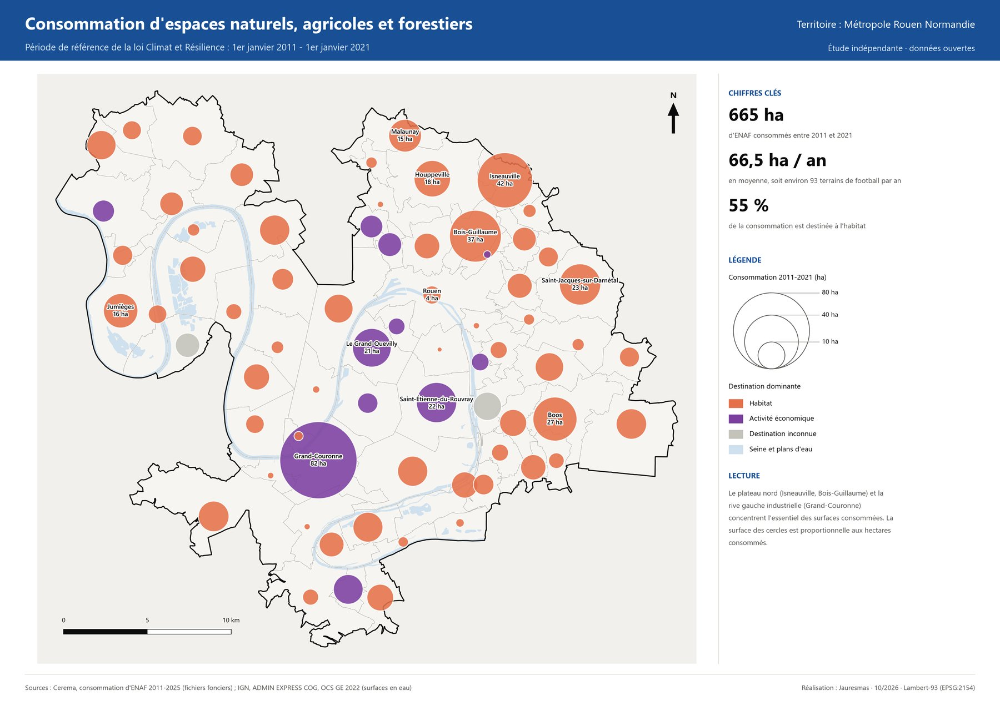
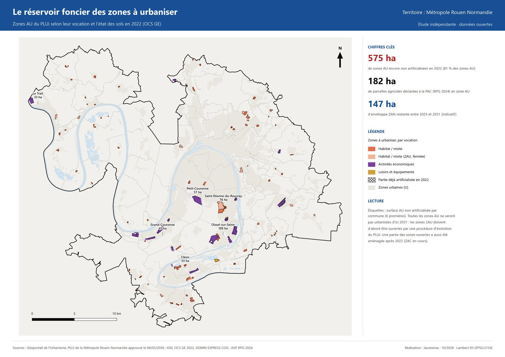
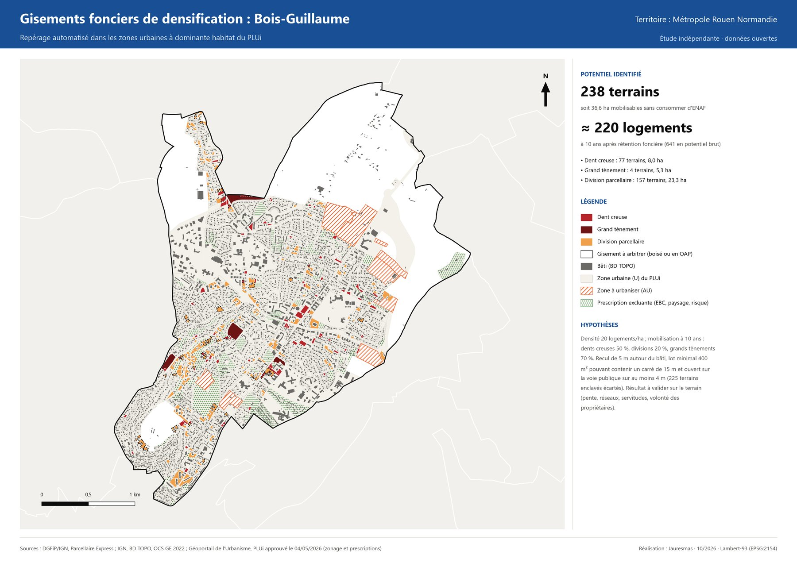
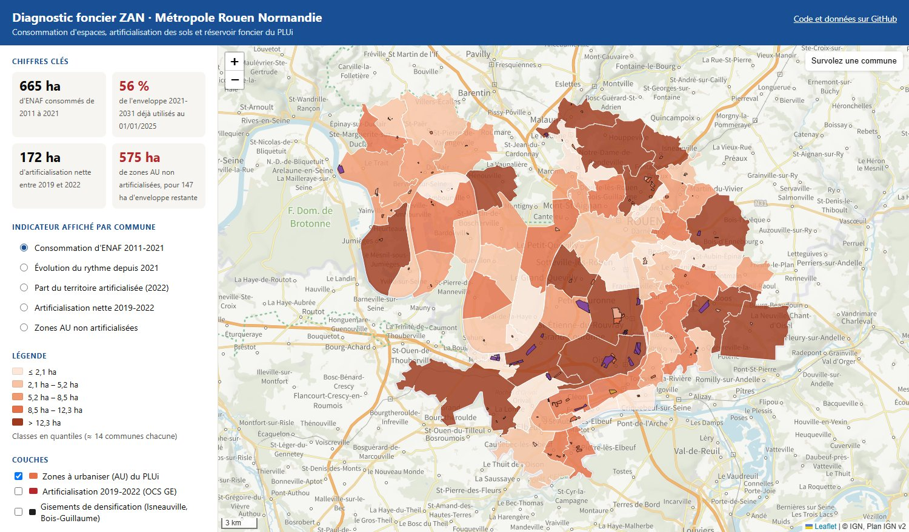
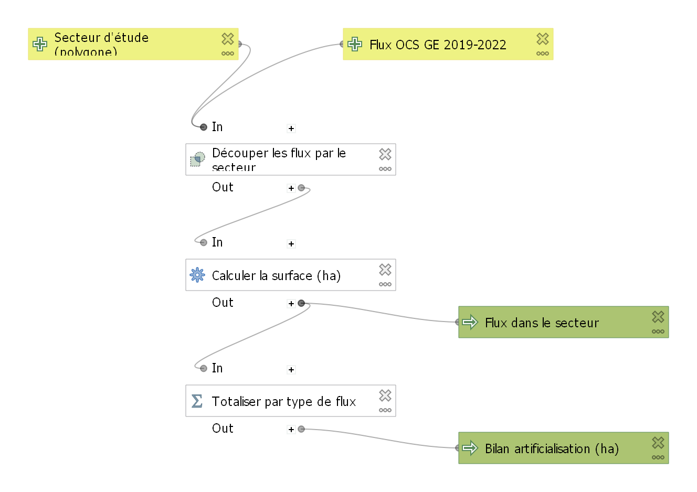
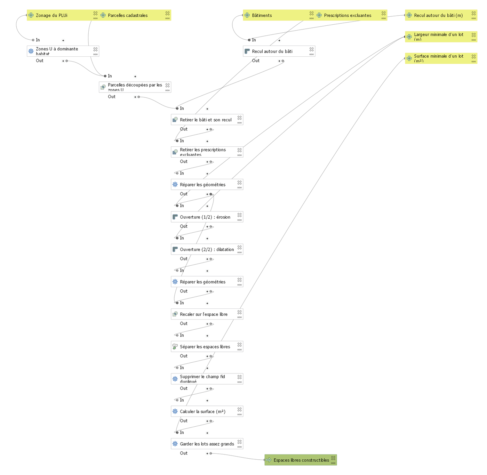

Urbanisme · ZAN · Analyse spatiale · QGIS · Python · Projet personnel, 2026
Diagnostic ZAN de la Métropole Rouen Normandie
Une chaîne de traitement SIG reproductible pour mesurer la consommation d'espaces et la tester contre le PLUi
Contexte et objectif
La loi Climat et Résilience fixe l'objectif de zéro artificialisation nette (ZAN) : diviser par deux la consommation d'espaces naturels, agricoles et forestiers (ENAF) sur 2021-2031 par rapport à 2011-2021. Pour un technicien SIG en collectivité, cela revient à répondre à trois questions : combien a-t-on consommé, où en est la trajectoire, et le PLUi est-il compatible avec ce qui reste ?
Ce projet personnel y répond sur la Métropole Rouen Normandie (71 communes) à partir de données ouvertes uniquement. Il ne s'agit pas d'une étude commandée : c'est une démonstration indépendante qui n'engage pas la Métropole. L'objectif était de livrer une chaîne de scripts qui se relance à chaque nouveau millésime de données, plutôt qu'une analyse ponctuelle, et un projet QGIS que n'importe quel agent peut ouvrir et réutiliser.
Démarche en cinq étapes
- Consommation d'ENAF depuis 2011 : combien, où et pour quel usage, avec la trajectoire vers l'objectif de −50 % (données Cerema).
- Évolution de l'occupation du sol 2019-2022 : chaque polygone de l'OCS GE (couverture et usage) est classé selon la nomenclature du décret 2023-1096, et les flux viennent du produit différentiel de l'IGN.
- Compatibilité du PLUi : les 3 241 zones du PLUi, au standard CNIG, sont croisées avec l'OCS GE 2022 et le RPG 2024 pour mesurer la réserve foncière des zones à urbaniser (AU) face à l'enveloppe restante.
- Gisements de densification : parcelles des zones urbaines à dominante d'habitat, dont on retire le bâti et son recul, les prescriptions excluantes (espaces boisés classés, patrimoine paysager, cavités souterraines), puis une ouverture morphologique pour ne garder que les lots exploitables, avec un accès à la voirie d'au moins 4 m.
- Automatisation et transfert : un script unique télécharge les données, lance les analyses et régénère tous les livrables en une quinzaine de minutes. Changer d'intercommunalité revient à modifier quelques paramètres.
Les données viennent du Cerema, de l'IGN (OCS GE 2.0, ADMIN EXPRESS, BD TOPO, Parcellaire Express), du Géoportail de l'Urbanisme (PLUi approuvé le 04/05/2026), de l'ASP (RPG 2024) et de l'INSEE.
Résultats
Sur la période de référence 2011-2021, la Métropole a consommé 665 ha d'ENAF, soit 66,5 ha par an. Depuis 2021, la consommation tombe à 185 ha sur 2021-2025, une baisse de 30 % alors que l'objectif est de −50 %. À début 2025, 56 % de l'enveloppe indicative 2021-2031 est déjà utilisée, après 4 ans sur 10. Côté sols, l'OCS GE mesure 172 ha d'artificialisation nette entre 2019 et 2022.


Le croisement avec le PLUi est le résultat le plus parlant : 575 ha de zones AU ne sont pas encore artificialisés, soit 3,9 fois l'enveloppe restante de 147 ha. La réserve foncière du document d'urbanisme dépasse donc largement ce que la trajectoire ZAN autorise. La densification offre des marges : sur Isneauville et Bois-Guillaume, la méthode repère 366 parcelles mobilisables, soit 58 ha et environ 347 logements à dix ans.

Carte web interactive
Les résultats sont aussi consultables sans logiciel dans une carte web : on choisit l'indicateur affiché par commune (consommation d'ENAF, rythme depuis 2021, part artificialisée, artificialisation nette, zones AU non artificialisées), on ajoute les couches du PLUi, de l'OCS GE et des gisements de densification, et on survole une commune pour lire ses valeurs.

Projet QGIS et modeleur graphique
Les scripts Python produisent les analyses, mais le rendu final est un projet QGIS prêt à l'emploi, qui s'ouvre à partir de QGIS 3.34 avec des chemins relatifs et sans fond de carte externe. Il contient 6 thèmes de carte (un par planche, avec la symbologie de la charte), 4 mises en page A3 (consommation, rythme depuis 2021, réserve AU, densification) et un atlas A4 piloté par les 71 communes : la commune est mise en évidence, une carte de situation l'accompagne et les indicateurs sont calculés par expressions.
Deux modèles du modeleur graphique permettent à un agent de refaire les analyses clés sans écrire de code. Ils se trouvent dans la boîte à outils de traitements, sous « Modèles du projet », et sont aussi fournis en fichiers .model3 :
- Bilan d'artificialisation d'un secteur : pour un périmètre de projet, un quartier ou un groupe de communes, il découpe les flux OCS GE 2019-2022 par le secteur et totalise les hectares artificialisés et désartificialisés. Sur Bois-Guillaume, il trouve 4,0 ha artificialisés et 1,6 ha désartificialisés, en environ une seconde.
- Espaces libres constructibles en zone U : il traduit la méthode de densification de l'étape 4 : sélection des zones U à dominante d'habitat, retrait du bâti avec recul puis des prescriptions excluantes, ouverture morphologique (érosion puis dilatation), séparation des espaces et filtre sur la surface des lots. Le recul, la largeur minimale et la surface minimale se règlent à chaque lancement, pour environ 10 secondes par commune.


Livrables et reproductibilité
L'étude est livrée comme un dossier complet : une note de méthode d'environ 15 pages et des fiches tutoriels pour les agents, les données en GeoPackage pour QGIS et en géodatabase pour ArcGIS Pro avec leur dictionnaire, 8 planches A3 en PDF et PNG, 5 graphiques d'analyse, un classeur Excel (synthèse, indicateurs par commune, zones AU, densification, matrice de transition) et un atlas PDF d'une page par commune. Une carte web Leaflet, publiée sur GitHub Pages, permet de consulter les résultats sans logiciel.
Les choix cartographiques suivent les usages de l'urbanisme (CNIG, MOS) : cercles proportionnels pour les valeurs absolues, aplats pour les ratios, couleurs vérifiées pour le daltonisme. Le code est sous licence MIT et les données dérivées sous Licence Ouverte 2.0.
Limites
L'enveloppe 2021-2031 retenue est indicative : elle vaut 50 % de la consommation 2011-2021, avant territorialisation par le SRADDET et le SCoT. La nomenclature d'artificialisation est appliquée sans les seuils de surface du décret, et la vocation des zones AU est déduite de leurs codes. Ces choix et leurs précautions d'usage sont détaillés dans la note de méthode.
Consulter le projet
Le dépôt complet (scripts, projet QGIS, modèles, livrables) est en accès libre.
Voir le code sur GitHub